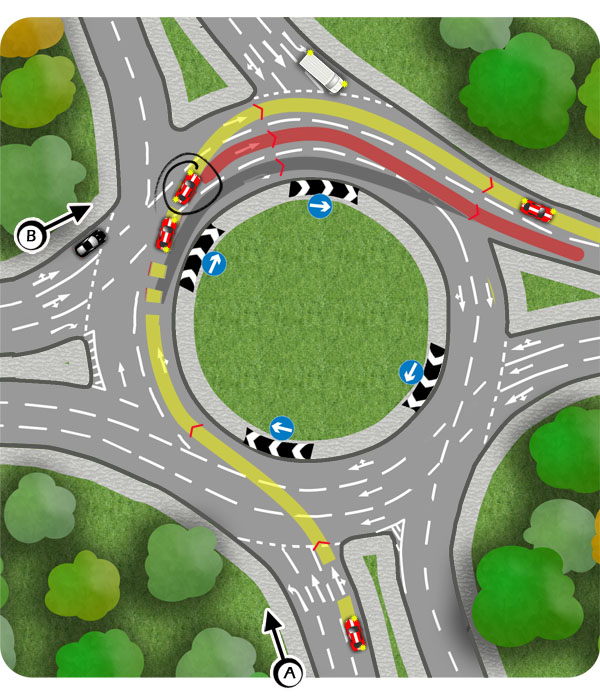

Lane layouts on the approach to larger roundabouts frequently vary, so use the road signs and markings to choose the ideal lane nice and early.
Illustrated below is a typical right turn. The yellow line shows the ideal route, peeling off to the left lane to exit the roundabout efficiently and safely.
However, even with a well timed exit signal (circled), you cannot guarantee a safe route to the left lane. There is a danger of the white van emerging or the black car accelerating up your left side. In either of these cases consider the red route, changing back to the left lane a little later on the new road.
The grey line illustrates a route where the lane change to exit is delayed until the last minute. This can create unnecessary difficulty and even prove impossible at times, especially where there are traffic lights on the roundabout or just one lane to exit into.

To see all of the ideal routes through the roundabout from A, press HERE
There is a difference in the lane layout when approaching to turn right from B. In this case, peeling off to the left when exiting might be problematic. Can you see why?
To see the ideal routes through the roundabout from B, press HERE